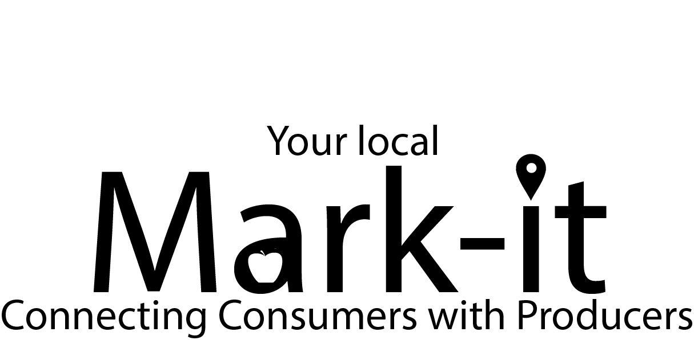
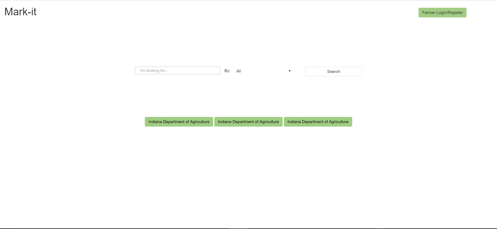
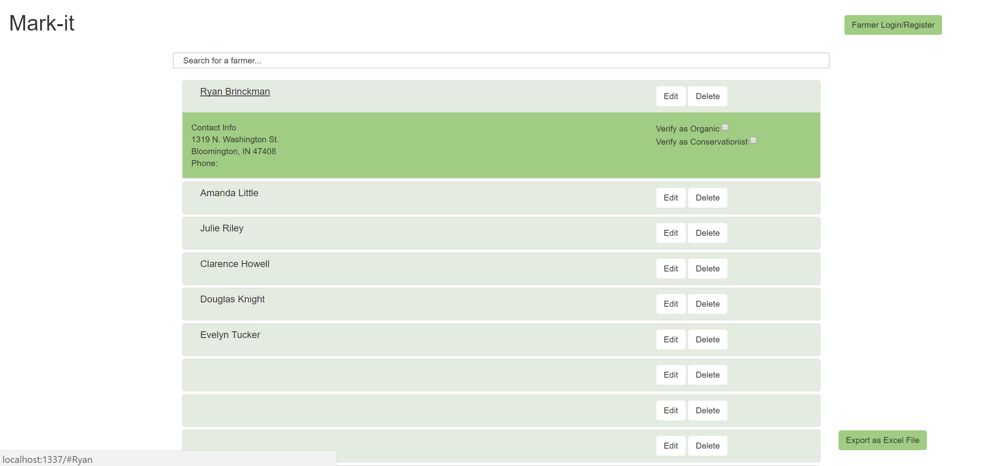
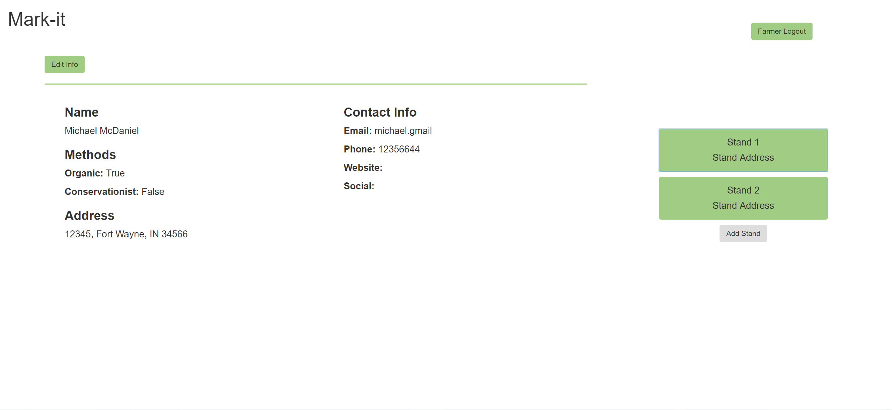
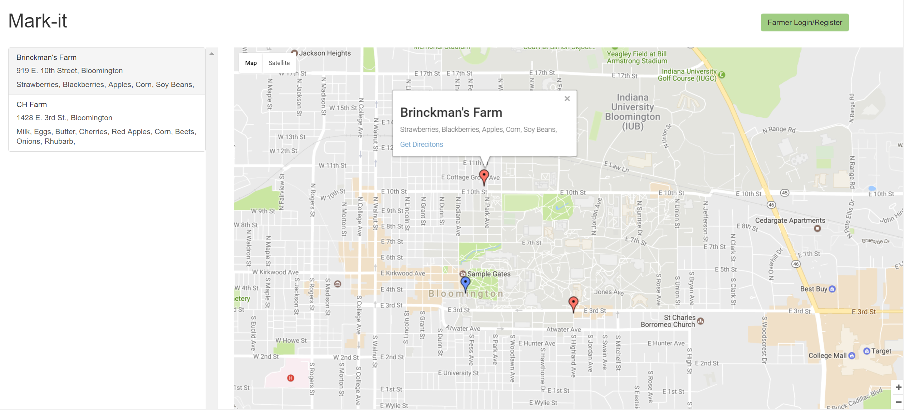

Last fall I applied and was accepted into a program created for and by developers to help nonprofits while teaching students to code. Serve IT is one of the best work expierence of my career, you are assigned to a team of 5 developers to work together to build a product that a local non-profit needs (all unpaid of course). The team I was place into was MCSWCD, which is the Monroe County Soil and Water Conservation District (I know, I know, not the best acronym). I was assigned as the front-end developer and designer for my team thus was in charge of design the site and developing the UX/UI and all other pieces that the user would interact with. We had been asked to create a solution for a way to have local farmers connect their produce to local residents; the end game was to help increase local economic growth and increase reveanue for the farmers as larger companies (Walmart and Kroger) have been taking over the sales for Organic produce. Our solution was to build a web application that allowed us to create profiles for every farmer with a list of their farmstand locations with what produce they sell; then users could search for any type of locally grown products and get a result they could follow all in an application. We quickly built wireframes and mockups and met often with our client to ensure that our solution was backed and going to have an impact, we then spent time on branding and came up with the name Mark-it (supposed to be a clever blend of 'market' and 'mark it on a map'). Once that foundation was laid we quickly built out a MVP (minimal viable product) and shipped it out for testing.
The main page that the user interacted with was of the map which the user put in a search term and pins showed up on the map highlighting all of the farmstands where farmers were selling that product. We had one semester to complete all of the work that we did, then we are rotated to a new project if we finished the first one, since this was proven helpful our team stayed on the same project and continued to develop the site till the end of the following semester. Unfortunately, I had moved out of Serve IT so could not continue to work with the same team. I will be heading back to Serve IT this fall of 2017 and will hopefully post an update on that project here!




